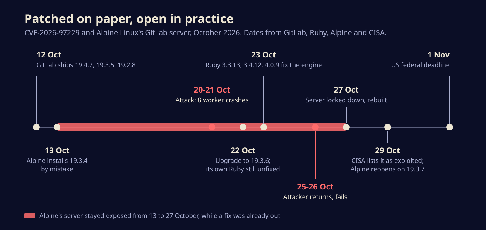

The GitLab patch that wasn't: how a Ruby regex bug left Alpine Linux open for two weeks
A CVSS 10 flaw in GitLab's CI regex handling is now on the US exploited list after an attacker went after Alpine Linux's server. The fix lives in Ruby, not GitLab, and that is exactly what tripped Alpine up. Here is how to check you are really patched.
CISA added CVE-2026-97229, a maximum-severity GitLab bug, to its list of exploited vulnerabilities on Thursday, after an attacker spent days trying to break into the GitLab server that Alpine Linux uses to build one of the most widely deployed container base images. Alpine says the attack failed, but it cannot prove that, so it burned the server down and rebuilt it.
The part every self-hosted GitLab admin should read twice: Alpine had upgraded GitLab after the fix shipped, and was still vulnerable. The bug lives in Ruby's regular expression engine, and if your GitLab does not run on GitLab's own patched Ruby, a GitLab upgrade alone does nothing.
A regex that compiles into code execution
GitLab lets CI configuration files use regular expressions, for instance to decide which branches a job runs on. The server compiles those patterns with Ruby, and Ruby hands them to Onigmo, its built-in regex engine. An integer overflow in Onigmo's compiler means a carefully built pattern can corrupt memory and end with the attacker running commands on the GitLab server.
GitLab published the fix on 12 October, rated CVSS 10.0, and credited a researcher known as joaxcar through HackerOne. Fixed releases are 19.4.2, 19.3.5 and 19.2.8. GitLab first named 19.3.4 as the fixed build for its branch, then corrected it to 19.3.5. That one-digit correction matters later.
There is a catch in how the fix was delivered. GitLab patched the copy of Ruby inside its own Linux packages and official container images. Anyone who builds GitLab from source, or runs it in a custom image with a separately installed Ruby, got new GitLab code and the same broken regex engine. Ruby itself did not ship fixed versions (3.3.13, 3.4.12 and 4.0.9) until 23 October. Ruby's maintainers note that Regexp.timeout and limits on pattern length do not protect against these bugs, since some can be triggered by short patterns.
How Alpine got caught
Alpine runs its own GitLab image, built on Alpine's Ruby package. Its incident report is unusually candid, and the timeline below comes from it.

On 13 October the team upgraded to 19.3.4, the version GitLab had briefly listed as fixed. On 20 October someone registered a fresh account and started sending crafted CI configurations. Over two days the GitLab worker processes crashed eight times; in four of those, the exploit got partway through before failing at the next step. The attacker also downloaded Alpine's GitLab container image, which Alpine reads as an attempt to tune the exploit to its exact build.
On 22 October Alpine upgraded to 19.3.6. Still vulnerable, because its image used stock Ruby. Alpine only spotted that on 26 October, after the attacker had come back on the 25th and 26th and been blocked. On the 27th the server was closed to everyone but developers and build machines, and rebuilt from scratch. It reopened on 19.3.7 with all passwords reset and GitLab's secret keys replaced.
Alpine did the upgrade twice and was patched zero times.
Alpine found no unexpected files, keys, hooks or processes, and says its packages, the aports repository and the 21 October releases check out against records kept outside GitLab, including 45 build servers. Its signing keys never lived on that machine. Still, it says it cannot rule out a successful run, because a clean hit would leave no crash, some logs from the attack day are gone, and outbound connections were not logged. If the attacker did get in, Alpine lists what was reachable: password hashes, 2FA secrets, CI/CD variables, runner tokens, webhook credentials and private repositories.
Check your own server today
US federal agencies have until 1 November to fix this, which tells you how CISA rates the risk. For everyone else:
- Find your version. Packaged or official-image installs need at least 19.4.2, 19.3.5 or 19.2.8, and the newest patch on your branch is better. If you are on 19.3.4, you are not fixed.
- Check your Ruby. For source installs and custom images, run
ruby -vinside the GitLab environment. You need 3.3.13, 3.4.12, 4.0.9 or later. Ruby 3.2 reached end of life and will not get a fix, according to The Hacker News, so move off it. - Re-pull images. Alpine's
alpinelinux/gitlab:19.3.6image was republished on 27 October with the fixed Ruby. Any copy pulled earlier is vulnerable. Alpine systems get the patched Ruby withapk upgrade. - If you cannot patch yet, close down the route Rapid7 reproduced in its lab: block anonymous access to public projects and stop untrusted users from creating or writing to them. Rapid7's working exploit needed write access to a public project first. This narrows the door; it does not fix the engine.
- Look for traces. GitLab has published detection rules for self-managed instances and suggests checking for files owned by the
gituser in/tmp, odd child processes under Puma or Sidekiq, unexpected outbound connections and changed crontabs or SSH keys. If anything looks off, rotate CI/CD variables, runner tokens, access tokens and the secrets file, not just passwords.
Vulnerability scanners may not help with step two. Ruby has not requested its own CVE IDs for these bugs, so a scanner that only matches the GitLab product will not flag a vulnerable Ruby runtime or base image.
The bigger picture
The same CISA update also listed a Cisco firewall bug that can crash ASA and FTD devices, but the GitLab case is the one with a lesson attached. Fixes increasingly live in a dependency, not in the product whose version number you check. A team as careful as Alpine's, running the build server behind a popular container base image, followed the vendor's upgrade path and stayed open for two weeks. Patching now means asking which component the fix actually touched, and whether your build uses the vendor's copy of it or yours.
Sources
- GitLab: Critical Patch Release 19.4.2, 19.3.5, 19.2.8
- Alpine Linux: GitLab security incident, attempted exploitation of CVE-2026-97229
- Ruby release announcement via oss-security: Ruby 4.0.9, 3.4.12 and 3.3.13
- CISA: CISA Adds Two Known Exploited Vulnerabilities to Catalog
- SecurityWeek: Max-severity GitLab vulnerability exploited against Alpine Linux
- The Hacker News: Attacker tried to exploit Alpine Linux's GitLab via CVSS 10.0 flaw its Ruby left open
Written with AI for Bade's Mod Shop. Facts are checked against the sources above on the day of publishing; if one is wrong, open an issue.